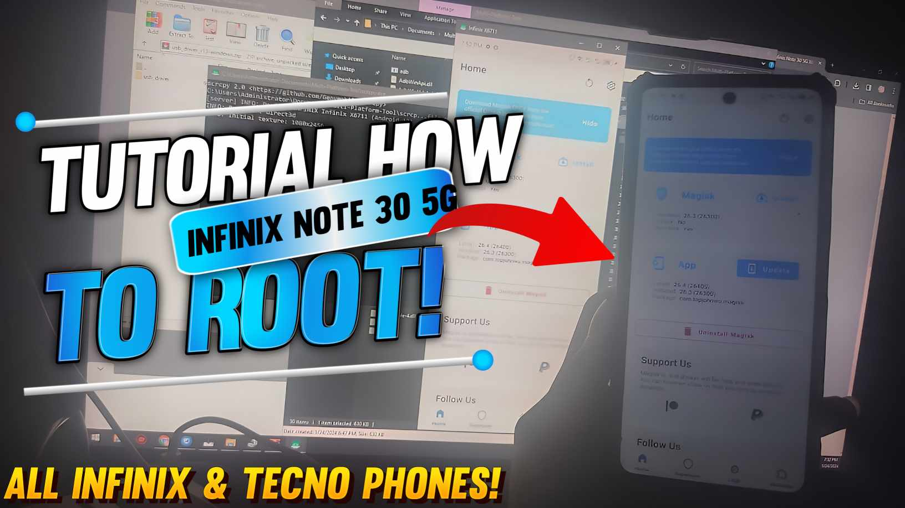

Greetings, tech enthusiasts! Welcome to our Blogspot Channel, where we dive into the fascinating world of Android customization. If you've ever felt the need to unleash the full potential of your Android device, you're in the right place.
But before we get started, a quick heads-up: the video quality might not be Hollywood-worthy. Unfortunately, I don't have the latest and greatest camera equipment to dazzle you with 4K visuals. However, I'm here to share knowledge, and with your understanding, we can make the most of what we have.
Scroll down to find the comprehensive, step-by-step tutorial in the video below. Rooting your Android opens up a world of possibilities, even if the video quality isn't top-notch. I'm working on improving that in the future.
You can try if it works for you!
I'm using Infinix Note 30 5G Dimensity 6080, and for Infinix/Tecno Phones.
adb reboot bootloader
fastboot flashing unlock then press volume up.
make sure you have OEM unlocking and USB debugging on and some drivers too.
and voila, your bootloader is unlocked
fastboot --disable-verity --disable-verification flash vbmeta vbmeta.img
fastboot flash boot then drag the Magisk patched boot.img onto the command prompt
fastboot reboot
voila, you're rooted now. congrats!
Happy rooting! 🚀📱